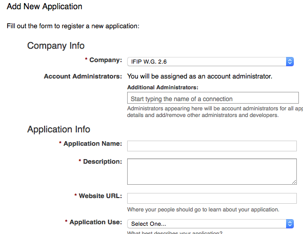
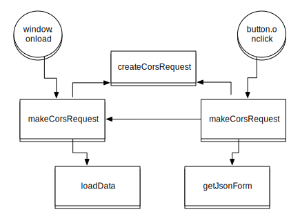

Programmazione Web e Mobile
Unità didattica 3 - Dati nel Web
Modulo 2 - Interfacce Utente
Università degli Studi di Milano - SSRI - CdL Online
Costruire un sito per una comunità di ricercatori che promuove attività di definizione dei criteri di qualità della ricerca
I contenuti di maggiore importanza sono:
|
Costruire un sito per una comunità di ricercatori che promuove attività di definizione dei criteri di qualità della ricerca
I contenuti di maggiore importanza sono:
|
|
Si può procedere attraverso il riuso di modelli e di servizi già disponibili
Scegliamo di scaricare un template HTML5 da HTML5 UP
Una volta scaricato il template possiamo iniziare a modificarlo
Per prima cosa modifichiamo i crediti citando la sorgente, come richiesto dalla licenza
È necessario comprendere la struttura della pagina
Alcuni dati posso essere nel foglio di stile
#one:before {
background-image: url("../images/banner.jpg");
background-position: top right;
background-repeat: no-repeat;
background-size: cover;
content: '';
display: block;
height: 15em;
width: 100%;
}
Le sezioni con contenuto stabile potranno essere riempite manualmente
Per i profili dei membri del gruppo si sceglie invece di acquisire i dati da un sorgente già esistente
In particolare LinkedIn possiede delle API JAVASCRIPT che consentono la lettura dei dati, senza la necessità di un supporto di scripting lato server
Javascript API ReferenceLe API agiscono attraverso uno script che si attiva solo per gli utenti registrati, accettando chiamate che provengono solo dal dominio dichiarato in fase di registrazione
Una volta eseguita la registrazione la chiave va inserita all'interno della pagina che dovrà richiedere i servizi linkedIn
I profili degli utenti possono essere quindi inclusi ancorando l'URL pubblica del profilo
Il badge visualizzato includerà le informazioni dell'intestazione rese pubbliche nelle impostazioni del profilo
La gestione della lista degli eventi viene gestita attraverso uno script che lavora con dati accessibili con chiamate asincrone e cross-Domain in JAVASCRIPT
XMLHttpRequest XMLHttpRequest livello 2 consente tra le altre cose chiamate corss-domain, a condizione che il server abbia definito di accettare la richiesta
Access-Control-Allow-Origin: http://example.com
>
Access-Control-Allow-Origin: *
Dal punti di vista dell'interfaccia la sezione degli eventi sarà caratterizzata da due aree: loadevents dove saranno visualizzati i dati; eventsform per inviare nuovi dati
I dati provengono da un DB Mongo che li rappresenta come documenti JSON
Definiremo quindi nello script JS una variabile locale con la URL del DB e la chiave di autenticazione per accedere al DB
var url = 'https://api.mongolab.com/api/1/databases/tlw/collections/IFIP2-6?apiKey=Lnoo6FMt-lwuSBAQWlf61aruZoBkOkoF';
Lo schema dell'URL è organizzato in base alla seguente struttura
https://api.mongolab.com/api/1/databases/YOUR-DATABASE/collections/YOUR-COLLECTION?apiKey=YOUR-API-KEY;
I dati provengono da un DB Mongo che li rappresenta come documenti JSON
Ad esempio nel nostro caso definiamo uno schema molto semplice
{
"_id": {
"$oid": "5481f573e4b05a496d0788c1"
},
"eventname": "IFIP 2.6 Business Meeting, ONLINE",
"eventdate": "2014-12-05"
}
Il codice JS sarà organizzato secondo il flusso di esecuzione seguente
L'esecuzione è avviata al caricamento della pagina
La funzione è tuttavia mantenuta indipendente dall'evento perché dovrà essere chiamate anche successivamente
window.onload = function() {makeCorsRequest()}
// NOT window.onload = function makeCorsRequest() {}
Per prima cosa dovremo eseguire una chiamata al DB e leggere la response
In modo sintetico questo potrebbe avvenire attraverso un codice di questo tipo
var request = new XMLHttpRequest();
request.open("GET", "https://api.mongolab.com/api/1/databases/YOUR-DATABASE/collections/YOUR-COLLECTION?apiKey=YOUR-API-KEY");
request.send(null);
Nel nostro caso costruiremo una funzione per parametrizzare la richiesta, in quanto eseguiremo richieste con metodi diversi
// Create the XHR object.
function createCORSRequest(method, url) {
var xhr = new XMLHttpRequest();
if ("withCredentials" in xhr) {
// XHR for Chrome/Firefox/Opera/Safari.
xhr.open(method, url, true);
} else if (typeof XDomainRequest != "undefined") {
// XDomainRequest for IE.
xhr = new XDomainRequest();
xhr.open(method, url);
} else {
// CORS not supported.
xhr = null;
}
return xhr;
}
Definiremo poi la funzione per eseguire la GET vera e propria, richiamando createCorsRequest e loadData per visualizzare i dati nel documento
// Function to get data from the DB
function makeCorsRequest() {
var xhr = createCORSRequest('GET', url);
if (!xhr) {
alert('CORS not supported');
return;
}
// Response handlers.
xhr.onload = function() {
var rq = xhr.responseText;
var result = JSON.parse(rq);
var status = xhr.status;
console.log("makeCorsRequest: " + status);
loadData(result);
};
xhr.onerror = function() {
alert('Woops, there was an error making the request.');
};
xhr.send();
}
Definiremo poi la funzione per visualizzare i dati all'interno dell'area definita dall'ID loadevents
// Function to load data in the document, to call just after getting response from the GET HTTP call
function loadData(result){
// container is first empty to then load the full sata set
document.getElementById("loadevents").innerHTML = "";
for (i=0; i < result.length; i++){
eventname = document.createTextNode(result[i].eventname);
eventdate = document.createTextNode(result[i].eventdate);
d = document.createElement("div");
var att = document.createAttribute("class"); // Create a "class" attribute
att.value = "calendar"; // Set the value of the class attribute
d.setAttributeNode(att);
p1 = document.createElement("p");
p2 = document.createElement("p");
p1.appendChild(eventname);
p2.appendChild(eventdate);
d.appendChild(p1);
d.appendChild(p2);
document.getElementById("loadevents").appendChild(d);
}
}
}
Definiremo poi la funzione per aggiungere i dati al DB, creando un nuovo documento.
È possibile infatti sovrascrivere l'attuale Collection utilizzando il metodo PUT
Per farlo dovremo ottenere i dati dalla form chiamando la funzione getJsonForm(). Una volta eseguita la richiesta POST dovremo chiamare nuovamente la funzione makeCorsRequest() per acquisire e visualizzare i nuovi dati
// fucntion to POST data on the DB
function makeCorsPost() {
// call the function returning data from the form
getJsonForm();
var xhr = createCORSRequest('POST', url);
if (!xhr) {
alert('CORS not supported');
return;
}
// Response handlers.
xhr.onload = function() {
var status = xhr.status;
console.log("makeCorsPost: " + status);
// when the response is available call a new request to update data
makeCorsRequest();
}
xhr.onerror = function() {
alert('Woops, there was an error making the request.');
};
xhr.setRequestHeader("Content-Type", "application/json");
xhr.send(jsondata);
}